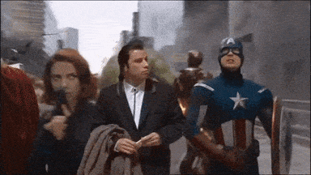
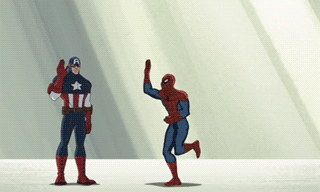
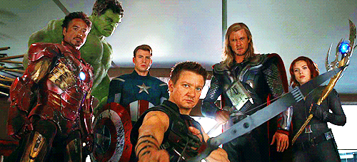

Galeria




Grupo de super-heróis de história em quadrinhos publicados nos Estados Unidos pela editora Marvel Comics. O grupo também aparece em adaptações da Marvel para cinema, desenho animado e jogos eletrônicos.
Steve Rogers era um rapaz franzino que, durante a Segunda Guerra Mundial, tinha como maior sonho servir aos Estados Unidos na luta contra os nazistas. Mas sua saúde frágil seria um eterno empecilho, se o rapaz não aceitasse participar em um experimento que poderia transformá-lo em um novo homem. Rogers foi inoculado com o Soro do Supersoldado e ganhou músculos e alta estatura quase imediatamente. Infelizmente, os planos de criar um exército de Supersoldados foi por água abaixo quando um atentado nazista matou o criador do soro, o Dr. Erskine, o que deixou Rogers como o único exemplar do Projeto Renascimento. Graças à sua aptidão física e a um intenso treinamento, Rogers foi transformado pelo governo norte-americano no Capitão América, um herói mascarado que serviria como inspiração patriótica aos soldados do Tio Sam. Graças à sua coragem e inteligência, o Capitão América tornou-se um grande herói e realizou arriscadas missões ao lado de seu parceiro, o jovem Bucky Barnes.
Anthony Edward Stark, mais conhecido como Tony Stark, é um personagem fictício e a verdadeira identidade do Homem de Ferro (Iron Man) — interpretado por Robert Downey Jr. Filho de Howard Stark e Maria Stark, ele é um prodígio desde a infância. Ou, como o próprio afirma: “um gênio, bilionário, playboy e filantropo”. Formou-se em engenharia elétrica e física no MIT (Massachusetts Institute of Technology) quando tinha apenas 15 anos. Aos 21 anos, com a morte de seus pais em um acidente de carro, herdou as Indústrias Stark, um complexo industrial-militar, especializado em armas avançadas, com contratos com o governo americano. A primeira armadura do Homem de Ferro foi construída quando Tony Stark foi capturado por Wong Chu, durante a guerra do Vietnã (originalmente), que a usou para escapar do cativeiro. Inicialmente, apenas Harold "Happy" Hogan e Virginia "Pepper" Potts sabiam da sua identidade, enquanto o resto do mundo acreditava que o Homem de Ferro era um segurança de Tony.
O Dr. Robert Bruce Banner era um cientista do governo norte-americano, cujo trabalho era desenvolver uma poderosa bomba gama. Porém, durante um teste no deserto, o cientista percebeu que um jovem invadiu o local e encontra-se próximo demais da bomba que em breve será detonada. Banner dirige-se para o local e consegue lançar o jovem em uma trincheira, mas é colhido pela explosão. Embora sobreviva, logo ele descobre que momentos de tensão fazem com que ele se transforme em um poderoso monstro de pele esverdeada e dono de imensa força, que recebe o apelido de Hulk. O ser é caçado pelo exército e, mesmo quando enfrenta ameaças inimigas, tem suas ações mal-compreendidas e é considerado perigoso pelo governo norte-americano. Entre as inúmeras aventuras que viveu, foi um dos fundadores dos Vingadores, mas deixou a equipe pouco após a sua formação. Ao longo de sua história, a criatura alternou períodos de inteligência com períodos em que não tinha controle sobre suas ações. Atualmente, o Hulk age como um agente especial da SHIELD, a organização de defesa norte-americana.
Thor teve uma origem inusitada. O Dr. Donald Blake, um médico norte-americano que visitava a Noruega, encontra um velho cajado que, ao ser batido no chão, transforma-se no martelo mágina Mjolnir e torna o Dr. Blake no poderoso Thor, filho de Odin e Deus do Trovão. Após impedir uma invasão espacial e enfrentar outros perigos, o herói conhece Asgard, o reino dos deuses nórdicos, e descobre que na verdade não é um médico da Terra, mas sempre foi Thor: com dúvidas sobre a humildade de seu filho, o poderoso Odin tirou seus poderes, apagou sua memória e o enviou para viver em nosso planeta como um humano franzino e com uma perna aleijada. Só quando o deus desmemoriado aprendeu o significado da humilde e do amor aos seus semelhantes é que seu poderes retornaram a ele. Durante anos, Thor levou essa vida dupla e enfrentou diversos perigos, tanto sozinho quanto ao lado dos Vingadores. Por alguns curtos períodos, trocou sua identidade, tornando-se Sigurd Jarlson, um operário de construção em Nova York, e Jake Olson, um enfermeiro.
Natalia Romanova, apelidada de Natasha, era um espiã russa que sofreu lavagem cerebral ainda na infância e foi treinada pelo Departamento X, do serviço secreto russo, para tornar-se uma arma letal de combate. Ela foi casada com Alexei Shostakov, um piloto de testes russo, mas ele faleceu. Em sua primeira aparição nos quadrinhos, a Viúva Negra tentou roubar os segredos da armadura do Homem de Ferro com a ajuda do então vilão Gavião Arqueiro. A princípio, ela era uma mulher fatal sem uniformes especiais, mas adotou um quando fugiu para os Estados Unidos e pediu asilo naquele país. Não demorou para que ela se integrasse aos Vingadores e participou da equipe durante anos. Ela também se tornou uma agente da SHIELD e realizou perigosas missões para a agência. Natasha conheceu o advogado Matt Murdock e tornou-se sua namorada, fazendo parceria com ele durante um longo período quando o herói mudou-se para a cidade de São Francisco. Quando o casal se separou, a Viúva Negra passou a integrar Os Campeãos, uma equipe de super-heróis formada por ela, Hércules, Anjo, Homem de Gelo e Motoqueiro Fantasma. Ela ainda participou de diversas aventuras do Demolidor ao longo dos anos, mesmo se seu romance com Matt Murdock já tinha acabado, e teve aventuras com os Vingadores Secretos, uma equipe dos Vingadores especializada em missões confidenciais de infiltração e sabotagem, embora aja por contra própria também.
Clinton Francis "Clint" Barton, mais conhecido como Gavião Arqueiro, é o maior atirador vivo do planeta e um ex-agente especial da S.H.I.E.L.D., onde trabalhou sob a supervisão de Phil Coulson. Conhecido pelo uso do arco e flechas como sua principal arma, Barton tornou-se um dos melhores agentes da S.H.I.E.L.D. e foi responsável pelo recrutamento da Viúva Negra, com quem desenvolveu uma forte amizade. Designado pelo diretor Nick Fury para vigiar o Tesseract, ele foi submetido a uma lavagem cerebral por Loki e usado como um peão para seus planos malignos. Contudo, após o Ataque ao Aeroporta-Aviões, Barton foi libertado do controle mental de Loki pela Viúva Negra e juntou-se aos Vingadores para enfrentar o exército alienígena de Loki na Batalha de Nova York, encerrando a Invasão Chitauri antes de retornar ao seu trabalho como um agente da S.H.I.E.L.D.
Peter Parker era um adolescente órfão, tímido e franzino, dedicado aos estudos e com poucos amigos além de seus tios que o criaram, o casal Ben e May Parker. Mas a vida de Peter mudou quando visitou uma exposição de ciências e foi picado por uma aranha radioativa, fruto de um experimento realizado ali. Logo, Peter descobriu que adquiriu os poderes da aranha: a capacidade de se fixar a paredes e grande força física, além de um “sentido de aranha” que o avisa sobre situações perigosas. A princípio, Peter tentou ganhar dinheiro com seus poderes, ao participar de eventos de luta e aparecendo na televisão com um uniforme que criou. Porém, uma noite Peter não prendeu um ladrão após vê-lo cometer um crime, pois não considerava aquilo sua responsabilidade. Pouco tempo depois, o mesmo ladrão matou o tio de Peter e, após prendê-lo, o rapaz jurou combater o crime e defender os inocentes como o espetacular Homem-Aranha ao perceber que “grandes poderes trazem grandes responsablidades”.
Para mais informações, por favor, visite Wikipedia e Rika Comic Shop